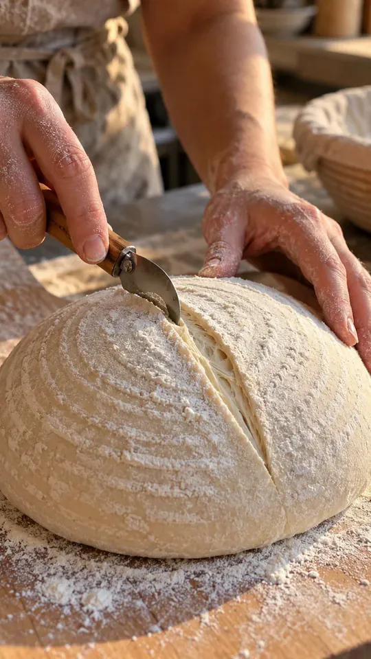
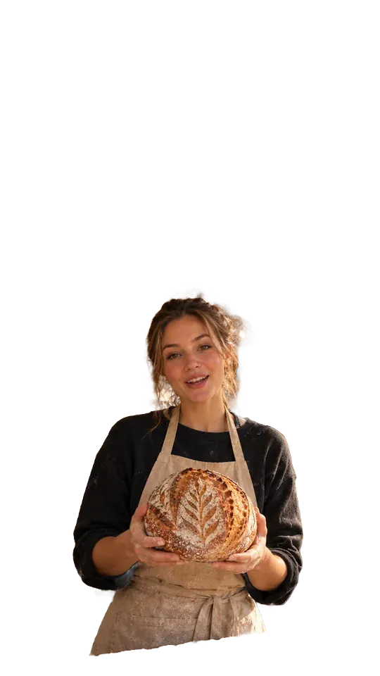
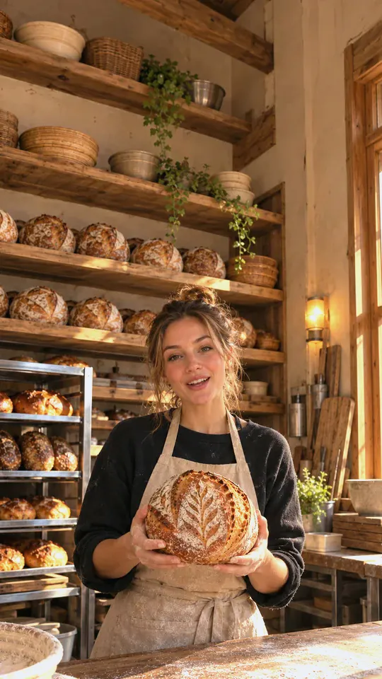
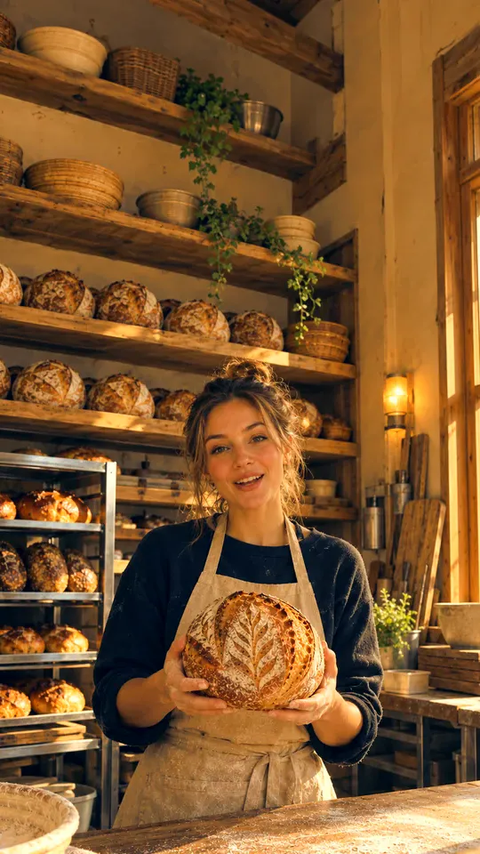
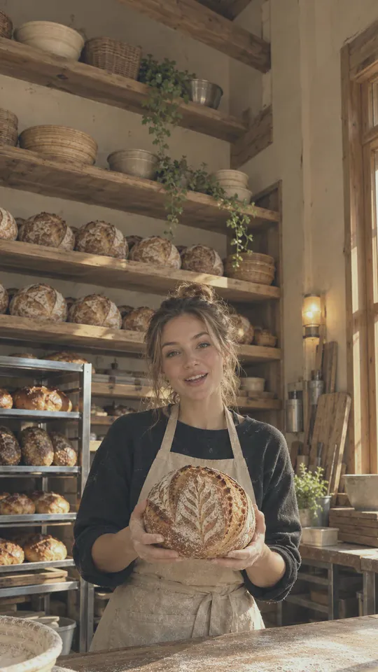
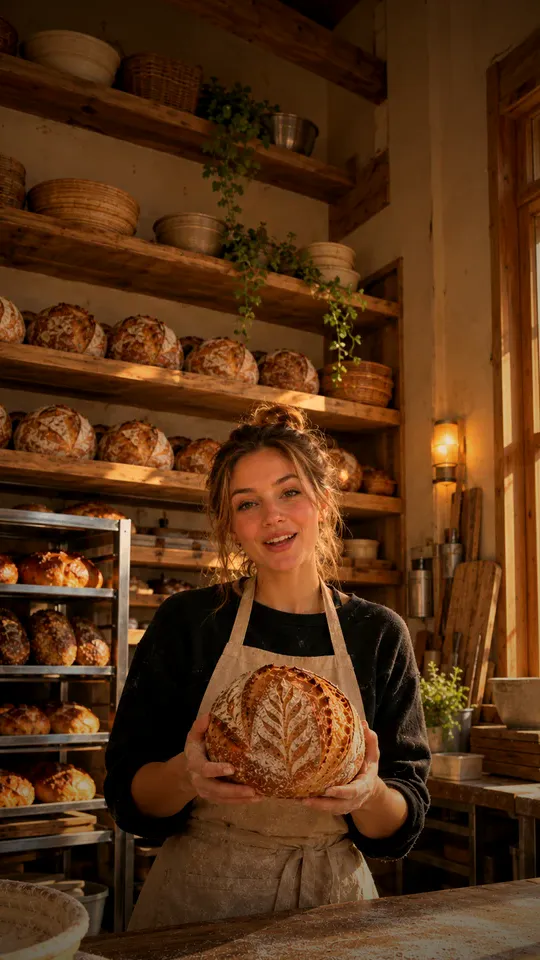
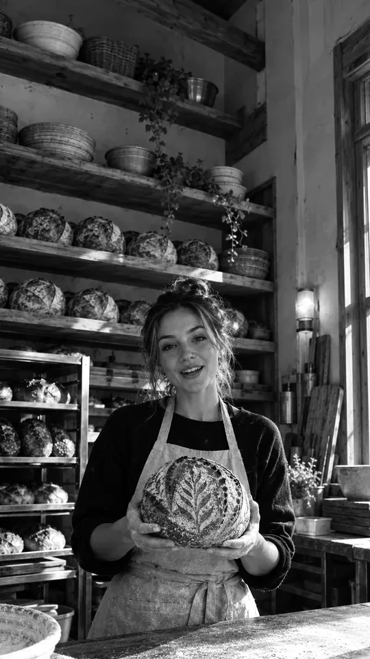

so this is my best loaf
Step 6 · Layer
Fonts
All nine are free (SIL Open Font License) and on Google Fonts. TikTok Sans is the skill’s default; the other eight are the ones Chockstone’s phone app ships. em/char is Chockstone’s line-break width: characters per line = line width ÷ (font size × em/char). Use a static (non-variable) file for libass and Blender.
I use it every night
three things I’d buy again
my favorite find this week
WAIT FOR IT
GAME CHANGER
SUNDAY RESET
a slow morning
note to self
Display faces for titles
For a hook, a title card, a cover or a set piece: one display face per video, captions stay in the plain sans. All twelve are SIL Open Font License on Google Fonts, shown here on the footage.
the slow rise
Sunday bake
fresh from the oven
CRUMB
a quiet morning
Proof
MORNING ROUTINE
NEW DROP
three things I love
12 hrs · 4 steps
GLOW UP
with love
Fontshare faces (Clash Display, Satoshi, Gambetta) are free under the ITF licence too, but not on Google Fonts. Any other font works if its licence allows video and apps. A glyph the font lacks (an emoji, a ♡) falls back to another font and is measured as one full em when placing text.
Step 6 · Layer
Caption styles
One phrase at a time, at most two lines, shown 0.15 s before the first word is heard. The skill’s default is the calm style; Chockstone’s phone draws four named styles. Captions sit low, below the face; place.py moves any phrase that would touch a face.
so this is my best loaf
So this is my best loaf
So this is
my best loaf
my best loaf
So this is
my best loaf
my best loaf
This is my best loaf

white on flour and dough
add a soft box
Caption rules
- 2 lines
- at most, bottom-heavy; never a 1-2 word top line
- 32 chars
- per line on a 1080-wide frame (42 for 16:9)
- ≤ 20 cps
- reading speed; condense the words, never speed up
- 0.15 s
- shown before the first word
- < 0.6 s
- gaps are bridged so captions don’t flicker off
- 3-5 words
- per phrase conversational, 4-6 calm, 2-3 high energy
- 0-10
- spelled out; numerals above ten
Formats from captions.py: json (Remotion), remotion, srt, vtt, ass.
Word highlights
Off in the calm style. An energetic style lights the word being said with PhraseCaptions highlight=: one mode per video, colours from brand.json. It needs captions.py --fps, which gives each phrase its words in frames; a phrase whose words do not match shows plain.
highlight="color"The spoken word turns brand.colors.highlight. Check that colour against the brightest frame it crosses.highlight="box"An accent chip behind the spoken word. Reads on any background.highlight="pop"The spoken word scales up a little, then settles.highlight="karaoke"Each word fills left to right over the time it is said. Lyrics, a chant, a slow line.
Step 6 · Layer
Animation
Calm by default: text fades in about 0.3 s, holds dead still, leaves 40-50% faster than it came. Nothing bounces, breathes or creeps unless the brand asks for energy. Remotion drives every move from the frame number, so renders are exact.
my saturday sourdough
bezier(0.16,1,0.3,1), held, out over 5. CalmText.three tips
for better crust
for better crust
so this is
my saturday
sourdough
PhraseCaptions.Hearth
lands and stops
spring({damping: 200}): no overshoot.boing boing
Timing
- 9 frames
- fade in (0.3 s at 30 fps)
- -40-50%
- exit length versus entrance
- 0.5 + 0.3/word
- seconds a title holds; last line 2 s or more
- chars ÷ 20
- seconds a hook holds (40 characters = 2 s)
- 4-9%
- of frame height for titles (77-173 px)
- 2.5-4%
- for body text (48-77 px)
Tools
- Remotion
- text, captions, logos, overlays, light 3D (
@remotion/three) - GSAP
- choreographed timelines inside Remotion
- Lottie, Rive
- designer-made vector motion
- Manim
- math and diagram explainers
- Blender
- path-traced glass, metal, product spins
Step 6 · Layer
Text behind a person
A big title that sits behind the head: the footage, then the text, then the person cut out and laid back on top. For the hook or a title card, never for captions. The cutout below is Apple Vision's person segmentation (accurate) run on the photo as is.

- Matte the person on the cutA draft render, not the sources. macOS:
matte work/draft.mp4 work/mask.mp4 --person work/person.webm(the skill’smatte.swift, Apple Vision; a 3 s clip takes about 5 s). It writes a grey mask, white where the person is, and the cutout on VP9 alpha with the edge softened. Elsewhere: MediaPipe. Fine hair or several people: SAM 2 or BiRefNet. - Stack three layersffmpeg: footage, title, then the footage with the matte as alpha. Remotion: the cut,
CalmText, thenperson.webm(VP9 alpha) withtransparent. - Check the sheet
place.pywould move this title off the face, so skip it for this one title and look at the frames instead.
Rules
- A heavy display face (Anton, Bebas Neue, Archivo Black) at 10-20% of frame height, in the top third.
- The head covers part of a letter or two, never a whole word.
- The person holds fairly still while it shows (1.5-3 s).
- Smooth the matte over time (
tmedian) or the edge flickers.
ffmpeg -i cut.mp4 -i mask.mp4 -itsoffset 0.5 -i title.mov -filter_complex \
"[1:v]format=gray,tmedian=radius=1,gblur=sigma=1.5[m];\
[2:v]scale=out_color_matrix=bt709:out_range=tv,format=yuva420p[ti];\
[0:v]split[bg][fg0];[fg0][m]alphamerge[fg];[bg][ti]overlay=eof_action=pass[t];\
[t][fg]overlay,format=yuv420p,setparams=color_primaries=bt709:color_trc=bt709:colorspace=bt709:range=tv[v]" \
-map "[v]" -map 0:a -c:v libx264 -preset slow -crf 15 -c:a copy out.mp4Tested on ffmpeg 8.1. Converting the title first ([ti]) matters: left to ffmpeg inside this graph, the title’s colour shifts.
Step 5-6 · Cut and layer
Transitions
The hard cut is the default. Pick one to three kinds per video and keep the same join for the same meaning. A transition never hides a cut that shouldn’t exist. Lengths are frames at 30 fps; edl.py centres each on the cut so the video keeps its length and the audio still cuts on the word.
Hard cut
Default0 frames · no transitionTalking head to B-roll, take to take, anything on a word.Cross dissolve
Calm12-18 f · ffmpeg fade · Remotion fade()Two takes of one set-up; two actions inside one clip; a cut that would jump.Dip to black
Calm16-24 f · fadeblackA real break in topic or time. Once or twice a video at most.Dip to white
Calm16-24 f · fadewhiteThe same break with a brighter feel.Push
Stylized8-15 f · slideleft · Remotion slide()Lists and reveals, when something on screen already moves that way.Cover
Stylized8-15 f · coverleftThe next shot slides over a still one.Wipe
Stylized8-15 f · wipeleft · Remotion wipe()A clean edge sweeps the next shot in.Iris open
Stylized8-15 f · circleopen · Remotion iris()A reveal from the centre.Zoom through
Stylized8-15 f · zoominPushes into the first shot as the second appears.Light leak
Brand energy10-20 f · Remotion OverlayA warm flash over a hard cut; the cut and the length stay put.All 58 ffmpeg xfade types (8.1)
fadefadeblackfadewhitefadegraysfadefastfadeslowdissolvedistance
wipeleftwiperightwipeupwipedownwipetlwipetrwipeblwipebr
slideleftsliderightslideupslidedownsmoothleftsmoothrightsmoothupsmoothdown
coverleftcoverrightcoverupcoverdownrevealleftrevealrightrevealuprevealdown
circlecroprectcropcircleopencircleclosevertopenvertclosehorzopenhorzcloseradial
diagtldiagtrdiagbldiagbrhlslicehrslicevuslicevdslicehlwindhrwindvuwindvdwind
squeezehsqueezevzoominpixelizehblur
In an EDL: "transition": {"type": "fade", "frames": 16} on the segment after the cut. edl.py check rejects names ffmpeg lacks.
Remotion presentations (4.0.539) and shaders
fadedissolveslidewipeflipclock-wipeirisnoneblur-slidebook-flip
cross-zoomcrosswarpdreamy-zoomfilm-burnlinear-blurpush-cutrippleswapzoom-blurzoom-in-out
Import each from @remotion/transitions/<name>. TransitionSeries overlaps neighbours and shortens the total; TransitionSeries.Overlay sits on a cut without changing it. Shader transitions (gl-transitions via @gl-transitions/remotion) are rare and never in a calm edit.
Step 6 · Layer
Zooms and set pieces
Each is a component in templates/remotion/Looks.tsx, rendered here in Remotion on the baker photo. One set piece per video, two at most, never back to back, and each has to show what is said: the chart grows on the number she says, the phone holds the app she names. The cover and the orbit use the matte.swift cutout so the words pass behind her.
Zooms
Zoom keys={[[0, 1], [end, 1.06]]}2-3% a second, eased. A long hold on a face; calm by default.Zoom keys={[[0,1],[4,1.3],[14,1.3],[18,1.7]…]}Two 4-frame steps, a hold, an eased return. Points at a detail she names. A single key (1.12) is the punch-in that hides a jump cut.ZoomThrough a b cut frames={12}A pushes to 3x with a 14 px blur, B lands from 1.6x. A change of place or time; aim the origin at something dark or plain.Vertigo background person scale={1.25}She holds at 1.25 while the room eases from 1.25 to 1 over 1.5-3 s. A realisation. Never scale the room past her: a bigger copy of her shows around the cutout.Title styles
MagazineCover title lines issue topA launch, a reveal, an episode of a series. Bodoni Moda masthead behind the head; set top so hair covers part of a letter.HeadlineWall lines every={10}Press, reviews, “everyone is talking about it”. Real quotes only, with the source in the caption; her own line lands last.PaperCut text tilt={-3}Torn paper behind a short title. Recipes, DIY, scrapbook, a handmade brand.TypeOn text framesA search, a message, a list being written. typeon.py writes the letter timings and a click track from one schedule, so each click lands on its letter. Press play to hear it; it sits at -12 dB under a voice.Overlays
PhoneMockup scale={0.62}An app, a product page, a post or a screen recording, framed in a phone. Captions go above or below it.ChartGrow bars unitBars rise 4 frames apart and their values count up. A figure she says; real numbers only, and no burned-in price where a project forbids it.Orbit background person words3-5 short words circle her head once in 6 s, passing behind her on the far side. The one set piece that keeps moving.UiWorld itemsSearch bar, notification, chat bubble and like count drift around her; behind tucks one under her. A story about an app, a message or a search.Zoom in Remotion, not with ffmpeg’s zoompan, which moves in whole pixels and jitters on a slow push. Vertigo and big punch-ins want footage at least 1.25x the output (4K for a 1080 render). Check each on the sheet (edl.py qa --sheet) for text on a face and for the app’s buttons covering it.
Step 6 · Layer
Layouts
Components in templates/remotion/Layouts.tsx. Green screen and background blur use the matte.swift cutout, so nobody needs a green cloth; the callout follows track.swift. Each one shows what is said: a split screen for a comparison, a counter for a list.
GreenScreen person backgroundTalking over a page, a product listing or a photo. The matte cuts the person out; position and scale place them.SplitScreen a b mode="side"This against that, or two angles. Each pane crops and focus picks what stays; "stack" puts one above the other.SplitScreen mode="wipe"A divider drags across one frame. Proof in a review: the same framing and light both times.BlurBackground footage person blur={24}Lifts the person off a busy or messy room; eases in over inFrames.Callout track text side arrowA label that follows an object through the shot, and fades when tracking is lost.ListCounter count total corner“3 things…”: the number rolls up at each item. count takes [[frame, n], …].ChapterCard title kicker mode="lower"Steps of a tutorial, parts of a long video. "full" fills the frame.Sticker text mode="pop" tiltAn emoji or a word on a moment, clamped to the safe zone. "fade" for a calm video.Callout, sticker and split-screen labels estimate text width at 0.56 em a character, so check long labels on the qa sheet. Fonts and colours come from brand.json, so layouts match the captions.
Step 5 · Cut
Pace
Pace is a style choice. The default is calm; an energetic style turns on ramps, punch-ins, effects and highlights. One rule holds in every style: a cut never clips a word.
| Calm (default) | Energetic | |
|---|---|---|
| Cuts | Only dead air; a cut must save 0.6 s | Tighter; a punch-in hides each jump cut |
| Shots | 2 s or more between two changes; cutaways 2-6 s | Shorter, still changing on words |
| Speed | Real time; an action plays whole, as an interlude if it outlasts the line | Ramps through the dull middle; slow motion on a reveal |
| Text | Fades in and holds still | Stickers, word highlights, a pop |
| Sound | Voice and music | One effect per moment: a whoosh on a swipe, a pop as a sticker lands |
| Shorten by | Dropping lines | Dropping lines, then ramps |
Speed ramp
Keys are (position in the segment, rate): "speed": [[0, 1], [0.35, 1], [0.45, 5], [0.85, 5], [1, 1]]. A ramp mutes the source sound; lay music or an effect over it. "speed": 2 plays a whole segment at twice speed with the voice pitch kept (natural up to about 1.5x); 0.5 is slow motion, "smooth": true makes new frames. Shoot 60 fps for slow motion.
J cut
The next segment’s sound starts before its picture: the viewer hears the new place first. "audio_lead": 10 (frames) on the segment after the cut.
L cut
A segment’s sound runs on under the next picture: a laugh that carries, a line finishing over the reaction. "audio_trail": 10. 6-15 frames is typical; the source needs that much room, and edl.py check says when it does not.
Interlude (calm)
Footage whose action outlasts the line plays in full after it, in real time: the voice pauses, the clip plays, the next line follows. "interludes": [{"after_line": 4, "clip": "broll/packing.mp4"}] in the plan. Actions inside one clip join with 0.6 s dissolves. The video gets longer; that is fine.
Step 7 · Mix
Audio made visible
Clean voice, takes matched within 1 dB, music 15-20 dB under the words, one master at -14 LUFS and -1 dBTP with one gain and a limiter. Music and effects only under a licence that covers the use.
Ducking
master.py mix --music bed.wav sets the bed --gap-db (default -9) under the voice’s loudness, then a sidechain compressor pushes it about 12 dB further down while the voice talks, so it breathes back up between phrases.
Room tone
Digital silence under a muted shot or a ramp sounds like a dropout. "room_tone": "work/room.wav" at the EDL’s top level loops the room under every gap with 30 ms fades. No recording? quiet.py tone take.mov work/room.wav lifts the longest quiet stretch (it refuses under 0.5 s).
Sound effects on the beat
"sfx": [{"path": "sfx/whoosh.wav", "at": {"seg": 3}, "align": "peak"}]. at takes seconds, a segment, a word or a cutaway; default -8 dB. Licensed or CC0 files only, each with its source page and SHA-256 in sfx/SOURCES.txt; a synthesized chime or tick needs no licence.
Typing sounds
typeon.py "best loaf" -o work/title writes the TypeOn letter frames and a key track from one schedule: synthesized clicks, or --samples DIR of recorded keys (a file with “space” in its name for the space bar). Add the sfx entry it prints at the title’s start; -12 dB under a voice.
Music
A subscription library, or a sound the person adds in the app after export. Creator plans cover the person’s own channels, not paid ads, brand promotion or client work. Audio pulled with yt-dlp is a beat reference only, never in a render.
Two mics
probe.py --levels finds the louder channel. Use it alone ("channel": N): two mics summed sound hollow and phasey.
Master
One gain to -14 LUFS, then a limiter at -1 dBTP. A dynamic loudnorm on the mix pumps and breathes; edl.py qa fails a render more than 0.5 LU off.
Step 7 · Grade and mix
Colour grading
Grade the cut before captions, titles and logos go on, so text and brand colours stay exact. Match the takes first (exposure and white balance until skin looks the same shot to shot), then one look over the whole edit, light by default. Last check: the product still looks like its listing photo, because a shopper buys that colour. Hold or hover a frame to see it as shot.

exposure=exposure=0.25,eq=contrast=0.94:saturation=0.92,colortemperature=temperature=7000:mix=0.6curves=all='0/0.06 0.5/0.5 1/0.95',colorbalance=rs=0.05:bs=-0.05:rh=0.04:bh=-0.03,eq=saturation=0.88,noise=alls=7:allf=t+u
colorbalance=rs=-0.08:bs=0.09:rm=-0.03:bm=0.04:rh=0.10:gh=0.02:bh=-0.10,eq=saturation=1.06
curves=all='0/0.14 0.6/0.58 1/0.88',eq=saturation=0.72,colorbalance=bs=0.05:bm=0.03
colortemperature=temperature=4200:mix=0.5,eq=contrast=1.06:saturation=1.12:gamma=0.97,vignette=PI/5
hue=s=0,curves=preset=increase_contrastffmpeg -i cut.mp4 -vf "format=gbrp,LOOK,format=yuv420p,setparams=color_primaries=bt709:color_trc=bt709:colorspace=bt709:range=tv" \
-c:v libx264 -preset slow -crf 15 -c:a copy graded.mp4Tested on ffmpeg 8.1: grading in RGB (gbrp) keeps colours on BT.709-tagged input, so conform first. A LUT goes in place of LOOK as lut3d=file=look.cube:interp=tetrahedral; one built for log footage (Apple Log, S-Log3) overcooks ordinary clips, and iPhone Apple Log needs Apple’s Log-to-Rec.709 LUT first. In Remotion, a CSS filter on the footage is a quick stand-in.
Step 6 · Layer
Safe zones
Each app’s feed drawn to scale on a 1080 by 1920 frame, with the box where text stays clear of its buttons and captions. Icons are simplified; positions follow 2026-10 measurements. The white sample text sits in the shared box, so it clears all three. No platform publishes organic figures and the UIs move, so re-measure from a phone screen recording each quarter. The last three show the tighter boxes for Stories and ads and for Pinterest, and how profile grids crop a cover.
place.py, CalmText and PhraseCaptions default to the organic box.
On taller phones the apps’ tab bars sit below the video; on 16:9 phones they cover its bottom 120-130 px, as drawn.
Steps 1 and 9 · Intake and delivery
Repair and privacy
Fixes for footage that arrived wrong, then the two checks before a video leaves: nothing private on screen, and a cover that holds up on the profile grid. The Apple Vision tools run on the Mac; nothing is uploaded.
Reframe 16:9 to 9:16
reframe.py wide.mp4 work/tall.mp4 follows the biggest face: still while it stays near centre, an eased move when it shifts, a jump at a cut. A 1080p source cropped to vertical is 608 px wide and upscales 1.8x, so shoot 4K when the edit will reframe. Two people: one reframe each, or a split screen.
Shaky, grainy or mismatched
- --stabilize
- smooths handheld at intake (
edl.py conform); crops 4% - --denoise light
- grain in low light;
strongis slower - match.py
- prints a
gradethat matches a second phone or take, read from a region on the face - --scopes DIR
edl.py qawrites each segment beside its waveform and vectorscope- sync.py
- lines up two phones from one clap; confidence over 1.5 is a sure match
Privacy blur
redact.py final.mp4 out.mp4 --dry-run --sheet work/regions.jpg > work/regions.jsonfinds addresses, phone numbers, emails, barcodes and long numbers on screen and boxes each on one sheet.- Look at the sheet. A region marked unsure was never read with full confidence. Vision rates every line 0.3, 0.5 or 1.0, and upside-down packaging print or curved embroidery comes back as garbage at 0.3-0.5.
- Every unsure region is print: render with
--sure-only. Otherwise delete the false ones from the JSON and render with--regions work/regions.json. - What OCR missed (handwriting, sideways or tiny print):
--box x0,y0,x1,y1@T0-T1; a thing that moves:--track; a fast pan:--step 1. - Watch the result.
--style boxis the only cover nothing can undo; blurred text can sometimes be read back.
Tested on a real mail unboxing: all nine regions it flagged were unsure packaging and hat print, and the sheet showed that in one look. Address patterns are US and UK.
Cover
cover.py work/graded.mp4 renders/cover.jpg --json work/cover.json --top 6 work/covers.jpg runs on the graded cut before captions, since half a caption reads badly on a grid.
- drops
- eyes shut or lowered, a head looking down, blurred frames
- ranks
- by Apple Vision’s aesthetics score; writes the best and a sheet of the next five
- title_box
- the band of the 3:4 grid crop clear of every face, for a cover title
Upload it as the custom cover. Pick from the sheet when the top frame is not the story’s moment.
Step 9 · QA
Reading the QA report
edl.py qa work/edit.json renders/final.mp4 --sheet work/qa.jpg exits 1 on any error. The sheet holds the frame just after every cut, transition and cutaway edge, plus the first and last. On macOS it also reads the text on screen every half second and measures levels; --allow WORD passes a brand’s own URL or name. Every error is fixed in code and re-rendered, never sent to the person as a question.
| Line | Level | Meaning and fix |
|---|---|---|
| Codec, pixel format, size or fps unlike the EDL | error | Re-render from the EDL with edl.py render |
| Missing BT.709 tags | error | Primaries, transfer and matrix all tagged; edl.py render does it, hand-written ffmpeg often does not |
| Frame count unlike the EDL’s timeline | error | A dropped or doubled frame: edl.py check, then re-render |
| Audio not AAC 48 kHz stereo | error | Re-render; the master is AAC 48 kHz stereo at 320 kbps |
| Audio more than 0.05 s off the picture | error | A variable-rate source, or audio cut without its picture: conform at intake |
| moov after mdat | error | -movflags +faststart |
| Loudness more than 0.5 LU off target, or true peak over it | error | master.py again; --no-loudness for a voice-only draft |
another app's watermark or credit | error | A line reading only TikTok, CapCut or "Made with ...": re-export the source without it, or cover it |
an email address / a phone number / a street address / a postcode / a tracking number on screen | error | Private details: redact.py (Repair and privacy) |
a barcode or QR code | warn | A shipping label's code holds the address: blur it; a product's own code can stay |
a price on screen | warn | Fine unless the project forbids prices (Amazon affiliates: never) |
a URL on screen | warn | Check it is the person's or the brand's; never a link shortener |
an app name on screen | warn | Fine when it is the point ("TikTok made me buy it"); a leftover watermark is not |
highlights clip / shadows crush | note | Over 20% of a segment's frames at the limits: grade.md |
segment N is brighter (darker, warmer, cooler) than the shot before | note | Two takes that should match do not: match.py |
possibly ... (OCR unsure): look at the frame | warn | Vision read it at low confidence: usually upside-down or curved print. Look; a real address still needs redact.py |
on-screen text not read | warn | Not on macOS, or ocr.swift missing: read the sheet for text by eye |
Reference
The numbers it edits by
Defaults. A project’s own style rules override them, except one: a cut never clips a word.
Cutting
- 0.6 s
- least a cut must save; shorter pauses play
- 2 s
- shortest shot between two changes
- 2-6 s
- cutaway over the voice
- outward
- cuts move into quiet, never into a word
- 1×
- real speed and actions in full, unless the style wants ramps
- 8 ms
- de-click fade on every audio cut
Hook, CTA, length
- frame 0
- hook on screen, at most 7 words and 2 lines
- 1.5-2.5 s
- CTA at the end, off the face
- ≤ 3:00
- to count as a Short; Reels past 3:00 are not shown to non-followers
- drop lines
- to shorten, never tighten pauses
Audio
- -14 LUFS
- master loudness
- -1 dBTP
- true peak ceiling
- 15-20 dB
- music under the voice, ducked
- -16 LUFS
- Chockstone’s own voice clean-up target
- licensed
- music and effects; one effect marks one moment
Render
- 1080×1920
- 30 fps (or as shot), never changed mid-edit
- CRF 15
- H.264 high, preset slow, yuv420p
- BT.709
- primaries, transfer and matrix; limited range
- AAC 48k
- stereo, 320 kbps
- faststart
- moov before mdat
- 25 Mbps
- Instagram API ceiling (300 MB): re-render at CRF 17-18, never resize
Off in the calm style, on when the style asks
Word highlightsSpeed rampsSound effectsStickers and popsOutlinesVariants for an A/B test
A project’s own rules can switch any of these off for good.
Never
A word cut offText on a faceA transition hiding a bad cutA smaller re-encodePrivate details on screen
Step 0 · Shoot
Filming guide
What makes the edit possible, in the order people forget it. Hand it over before the shoot.
Hold still 3 s
Before the first word and after the last of every take, and around every action. Cuts and dissolves need those frames.
10 s of room tone
Everyone quiet, camera rolling, at each place you film. It fills every gap in the edit.
Hands-only B-roll
Each product in the hand, opened, in use, and the result: 5-10 s each, steady, no talking. Keep addresses out of frame.
Lock the camera
Lock exposure and focus (long-press on iPhone) and face the light. 4K when the edit may punch in or reframe; 60 fps for anything that may play slow.
One mic, close
A lav, or the phone 50 cm away. No music playing while filming.
Set pieces
Text behind a person, a vertigo zoom and green screen need the person in place and the camera locked off. Green screen also wants even light.
Two phones
Start both and clap once on camera; sync.py lines them up from the clap.
The hook three ways
It is the line most worth having options for.
Step 4 · Plan
Recipes by content type
Beats, footage and tools per kind of video, in the calm style; “energetic” is what to add when the person wants pace. The full recipes are in references/cookbook.md.
Haul
- Open
- every item at once with the count, a
ListCounterin a corner - Per item
- 5-10 s: named on the cut to its footage, one reason, a verdict
- End
- the favourite, then the CTA
- Energetic
- a sticker per verdict, a pop as each lands, a ramp through unpacking
Unboxing
- Open
- the product in use for 1-2 s
- Body
- box, opening, each layer; the first look plays whole with its own sound
- Detail
- a digital zoom or a callout on what is named
- Privacy
- blur the shipping label before anything else
Get ready with me
- Open
- the finished look, then back to the start
- Body
- each step as it happens; each product held to camera 2 s as it is named
- Long steps
- an interlude, or drop lines; never sped up in the calm style
- End
- the look again, held, then the CTA
Review
- Open
- the verdict or the surprise
- Body
- what it is, what is good (shown working), what is not, who it is for
- Proof
- a before and after wipe, a timer, a measurement
- Sponsored
- the disclosure before any praise
Comparison
- Open
- both side by side and the question
- Body
- one test per beat, same framing and light, the winner said aloud
- Colour
match.py, so the light does not decide- End
- the overall winner, and who should buy the other
Tutorial
- Open
- the result, then “how to … in N steps”
- Per step
- a chapter card or counter, the line, the action whole, its result
- Screens
- a phone mockup, or a callout on the button
- End
- the result again and the one mistake to avoid
Talking head
- Open
- the line that makes the point, never a greeting
- Body
- lines in order, cutaways on what is named, a punch-in on jump cuts
- Angles
- a second phone gives cuts somewhere to go
- End
- the payoff held a beat; the CTA as text
Reference
Workflow
Footage in, one finished video out. Every stage reads and writes one edit decision list (EDL), so the cut can happen in ffmpeg, Remotion, Blender or Chockstone’s editor.
- ShootHand over the filming guide; pick the content type’s recipe.
- OrganizeOne folder per video:
takes/broll/hooks/logos/music/work/renders/. Conform everything intowork/. - Look
probe.pyevery file,sheet.pyevery clip. A take with no speech is footage (a demo, B-roll), not dead air. - TranscribeWord timings (WhisperX by default, local), numerals spelled out so they align, word ends fitted to the audio.
- PlanStory beats, lines kept and dropped by number, the hook, B-roll and interludes, one best version.
- CutWrite the EDL,
quiet.py snap,edl.py check,edl.py render --draft. - LayerCaptions, titles, logos, transitions, motion graphics, 3D.
- MixVoice clean-up, takes matched, music bed, master to -14 LUFS.
- RenderOne master at CRF 15, BT.709, AAC 48 kHz.
- Check and hand over
edl.py qa --sheet, look at a frame after every change, then hand over one file with its caption text. - Learn
retention.pylines the posted video’s retention graph up with its EDL: a drop at 0-3 s is the hook, at a cut the cut, a slow slide the length. It plans the next video; it never re-cuts this one.
Reference
Worked example: a haul
One request from footage to hand-over, as an illustration: two talking takes and six product clips. The files and lines are made up; the steps, tools and order are the skill’s.
- The ask“Edit the clips in haul/ into one Reel with captions.” Claude makes the editorial calls from there.
- Look
probe.pynotes t1 is HDR at a variable 60 fps, soedl.py conformmakes everything 30 fps SDR. The sheets show broll/b4 has no speech: it is the packing footage, kept whole for an interlude. - TranscribeWord timings, with “6” spelled “six” so it aligns. The splitter prints 24 numbered lines.
- PlanThree hooks written, one picked. Lines 3, 9 and 15 drop (a restart, a repeat, a fumble); the printout of dropped lines shows none names a product.
- Cut
quiet.py snapmoves two edges out of words into pauses;edl.py checkpasses; a draft render. - LayerA
ListCountercounts to six as items land; phrase captions, moved off the face byplace.py. - MixTakes matched within 1 dB, the bed 15-20 dB under the voice, -14 LUFS.
- Check
edl.py qaerrors on a street address at 0:07, the label on a box.redact.pyblurs it and qa passes on the re-render.cover.pypicks the cover. - Hand overOne video, its cover and the caption text to paste. The person watches it and posts it.
{
"story": "six things from this week, each with a verdict",
"keep": [0, 1, 2, 4, 5, 6, 7, 8, 10, 11, 12, 13, 14,
16, 17, 18, 19, 20, 21, 22, 23],
"hold": [12],
"hooks": [
{"id": "A", "text": "six things I got this week", "open_line": 0},
{"id": "B", "text": "the one I'd buy again", "open_line": 21},
{"id": "C", "text": "under-the-radar finds", "open_line": 4}
],
"best": "B",
"best_why": "opens on the favourite, then the list runs in order",
"cutaways": [{"line": 4, "clip": "broll/b1.mp4", "word": "lamp"}],
"interludes": [{"after_line": 12, "clip": "broll/b4.mp4"}],
"cta": "all six are on my page",
"music": "music/bed.wav"
}The plan holds decisions only, lines by number and clips by name. Code turns it into the EDL and does every bit of timing.
Reference
Commands
Python 3.10+ standard library plus ffmpeg 7 or newer. Each script has --help. The skill lives in ~/.claude/playbook/skills/video-edit.
# look
python3 scripts/probe.py takes/*.mov --levels
python3 scripts/sheet.py takes/t1.mov work/t1.jpg --every 2
# intake: HDR to SDR, constant fps, rotation baked
python3 scripts/edl.py conform takes/*.mov -o work/
# cut
python3 scripts/quiet.py snap work/edit.json -o work/edit.json
python3 scripts/edl.py check work/edit.json
python3 scripts/edl.py render work/edit.json work/draft.mp4 --draft
# captions, placed off faces
python3 scripts/edl.py words work/edit.json -o work/timeline.words.json
python3 scripts/captions.py work/timeline.words.json -f json --fps 30 -o work/caps.json
~/.cache/video-edit/faces work/draft.mp4 3 30 > work/faces.json
python3 scripts/place.py work/faces.json work/caps.json -o work/caps.placed.json
# master and check
python3 scripts/edl.py render work/edit.json renders/cut.mp4
python3 scripts/master.py mix renders/cut.mp4 renders/final.mp4 --music music/bed.wav
python3 scripts/edl.py qa work/edit.json renders/final.mp4 --sheet work/qa.jpg{
"fps": 30, "size": [1080, 1920],
"sources": {
"t1": {"path": "work/t1.mp4", "words": "work/t1.words.json"},
"b1": "work/jar.mp4",
"ti": "work/title.mov"
},
"segments": [
{"src": "t1", "in": 0.05, "out": 2.2},
{"src": "b1", "in": 0.5, "out": 3.5, "gain_db": -12,
"transition": {"type": "fade", "frames": 16}},
{"src": "t1", "in": 2.9, "out": 7.98}
],
"cutaways": [
{"src": "ti", "in": 0, "out": 2, "at": 1, "fade": 0}
]
}An EDL. Times are seconds in each source; edl.py rounds them to frames. A transparent cutaway (a ProRes 4444 title) lays over the shot instead of replacing it.
# two phones, matched
python3 scripts/sync.py takes/main.mov takes/phone2.mov
python3 scripts/match.py takes/main.mov takes/phone2.mov --region 0.3,0.2,0.7,0.5
# repair at intake
python3 scripts/edl.py conform takes/*.mov -o work/ --stabilize --denoise light
python3 scripts/reframe.py wide.mp4 work/tall.mp4
python3 scripts/quiet.py tone takes/t1.mov work/room.wav
# long video to short clips
python3 scripts/clips.py work/talk.words.json
python3 scripts/clips.py work/talk.words.json --pick 3,7 --src talk.mp4 -o clips/
# a typed title and its key sounds
python3 scripts/typeon.py "best loaf yet" -o work/title
# before handing over
python3 scripts/redact.py renders/final.mp4 renders/final.redacted.mp4 --dry-run --sheet work/regions.jpg > work/regions.json
python3 scripts/redact.py renders/final.mp4 renders/final.redacted.mp4 --sure-only
python3 scripts/cover.py work/graded.mp4 renders/cover.jpg --json work/cover.json --top 6 work/covers.jpg
# after posting
python3 scripts/retention.py work/edit.json curve.csv
Step 9 · Deliver
Compliance
US rules as of 2026-10, from references/compliance.md. Not legal advice: a brand’s contract or a project’s own rules can ask for more.
Sponsored or gifted
When a brand paid, gifted, discounted or reimbursed the creator, or a link earns, the video itself discloses: on screen, aloud, or both. At the start, and again before a mid-video endorsement. A caption or bio alone is not enough.
- works
- “Brand paid me to try this”, “Brand sent me this for free”, “Sponsored by Brand”, “#ad” at the start
- fails alone
- “gifted” without who gave it, #ambassador, #partner, #collab, “sp”, a thank-you
Platform labels (paid partnership, TikTok’s disclosure toggle) add to this; whether to use them is the creator’s call.
Affiliate links
- Disclose in the video and next to the link: “I earn from this link”.
- Amazon Associates: no prices burned into the video, no link shortener that hides amazon.com, no paid boosting, no product images taken from listings.
- The Associates statement goes wherever the links are; a bio or link page counts.
Synthetic media labels
Realistic people, places or events made by a generative model need the platform’s label: TikTok’s content label, Meta’s info label, YouTube’s altered or synthetic setting. Editing real footage (cuts, grade, captions, noise reduction, background blur) needs none. A synthetic voice over real footage is borderline: disclose it.
Originality and privacy
No other app’s watermark: platforms rank reposts lower, and edl.py qa fails on one. Nothing that identifies a private person: shipping labels, addresses, phone numbers, emails, tracking numbers, a bystander’s face, a screen full of notifications.
Reference
Troubleshooting
When a render looks or sounds wrong. Each fix happens in code, followed by a re-render.
Picture
| Symptom | Cause | Fix |
|---|---|---|
| Colours shift or look washed out in the app | Untagged file, or BT.601 read as BT.709 | edl.py conform; check tags with probe.py; render.md on hand-written ffmpeg |
| iPhone footage looks grey and flat or blown out | HDR (HLG, Dolby Vision) left unconverted | edl.py conform tone-maps to SDR at intake |
| Stutter or doubled frames | Variable frame rate source | edl.py conform (constant 30 fps) |
| Sideways or upside-down clip | Rotation flag not baked | edl.py conform |
| Jumpy slow push | ffmpeg zoompan moves whole pixels | Zoom in Remotion |
| Blurry after a punch-in or reframe | Upscaling a 1080p crop | Shoot 4K; keep zooms at 1.15 or less |
| Shaky handheld | conform --stabilize (crops 4%) | |
| Grainy low light | conform --denoise light, or strong (slower) | |
| Text on a face | Captions placed before a re-cut | Re-run faces on the final cut, then place.py |
| A flash frame at a cut | An off-by-one out | edl.py check; the qa sheet shows the frame after each cut |
| Wobbly green screen edge | Use the matte (matte.swift --person) and GreenScreen, not a chroma key |
Sound
| Symptom | Cause | Fix |
|---|---|---|
| A word clipped at a cut | Edge in speech | quiet.py snap; never move an edge inward |
| A click at a cut | No fade at the edge | edl.py render fades every edge 8 ms; check hand-made graphs |
| Hollow, phasey voice | Two mics summed | Use the louder channel alone ("channel": N) |
| Sudden silence under B-roll | Muted segment with nothing under it | room_tone at the EDL's top level |
| Voice jumps in level between takes | Takes recorded differently | gain_db per segment, within 1 dB |
| Music swamps the voice | Bed too loud | master.py mix --gap-db lower; 15-20 dB under speech |
| Breathing, pumping level | Dynamic loudnorm on a mix | One gain and a limiter (master.py) |
| Audio drifts out of sync | VFR source, or audio cut without picture | Conform; Auphonic's silence_cutter off |
| A whoosh lands early | Effect aligned by its start | "align": "peak" |
Pipeline
| Symptom | Cause | Fix |
|---|---|---|
| A line vanished from the edit | Wrong index; or a silent take | Print lines from the splitter; check takes for speech (plan.md) |
| Numbers mistimed in captions | Aligner cannot time digits | Spell numerals out before aligning |
faces, ocr or matte will not build | No Xcode command line tools | xcode-select --install; off macOS use MediaPipe |
Remotion Cannot find module brand.json | JSON imports off | "resolveJsonModule": true in tsconfig |
| Platform refuses an upload | Over its bitrate or size limit | Re-render at CRF 17-18; never resize (render.md) |
redact.py covers packaging or a cap | OCR read print it could not make out (unsure) | --sheet, then --sure-only or edit the JSON |
edl.py qa says "possibly ... (OCR unsure)" | The same: garbage read from print | Look at the frame; no fix when it is print |
Glossary
- A-roll / B-roll
- the main talking footage / footage shown over or between it.
- Cutaway
- a B-roll shot laid over the voice; picture changes, sound runs on.
- Interlude
- a clip played whole between two lines, with its own sound, while the voice pauses.
- J cut / L cut
- the next shot's sound starts before its picture / a shot's sound runs on under the next picture.
- Jump cut
- a cut inside one take that makes the subject jump; a punch-in hides it.
- Punch-in
- a small zoom (1.1-1.15) on the second half of a jump cut.
- Speed ramp
- footage that changes speed inside one shot.
- Room tone
- the sound of the empty room, laid under gaps so they never go dead silent.
- EDL
- edit decision list, the JSON every stage here reads (
edl.py --help). - Conform
- converting every source to one frame rate, colour space and orientation at intake.
- Handles
- spare source frames past a cut, which a dissolve uses.
- Matte
- a mask of the person, for text behind them, background blur and green screen.
- Safe zone
- the part of the frame no app button or caption covers.
- LUFS / dBTP
- loudness as heard / the highest true peak; masters sit at -14 LUFS, -1 dBTP.
- CRF
- x264's quality setting; lower is better, 15 is near-transparent.
- BT.709
- the HD colour standard every master is tagged with.
- Waveform / vectorscope
- graphs of brightness by position / of colour, for matching shots.
- Hook
- the first line and text, which decide whether a viewer stays.
- CTA
- the call to action at the end ("full routine on my page").
- Cover
- the frame shown on the profile grid; cropped to 3:4 or 4:5 there.
Chockstone posts
Editing a Chockstone post
The phone records, cuts and renders; Claude changes the edit list through Chockstone’s MCP tools. Claude never calls post_submit, post_schedule or any publish tool. The person posts.
edit_get→edit_change (base_rev)→edit_render→edit_frames→wrong turn:edit_versionsundo
| To do this | Change | Notes |
|---|---|---|
| Drop a line | split then remove, or trim | Split points from caption ends, moved out into the pause |
| Cut dead air | cut_pauses | Defaults min_ms 1500, keep_ms 400; never under 1000 / 300 |
| Better take | swap_take | Its captions follow |
| Reorder | move | 0 is first |
| Jump inside one take | punch_in 1.1-1.15 | Face stays in frame |
| Match takes | look, volume | Exposure and warmth within ±0.15 |
| Hook, CTA, title | text_add | x, y are the centre as frame fractions; size 24-160 |
| Logo, product shot | image_add | Width 0.2-0.3, on the word that names it |
| Captions | captions | Style clean, bold, boxed or pop; y: null; font from the brand kit |
| Fix caption words | caption_edit | Brand names spelled the brand’s way |
| Music | music with duck: true | The person’s own licensed file |
| Clean the voice | sound {clean: true} | Cleans to -16 LUFS; fade out 300-800 ms |
| Cover | cover | A frame with face and product |
Step 6 · Layer
Blender 3D titles
blender_title.py renders a title or logo reveal headless as transparent PNGs (about 0.3 s a frame on Apple Silicon, tested on Blender 5.2.3 LTS). Use Remotion for flat text; Blender is for depth, glass and metal.
| Flag | Default | Does |
|---|---|---|
--text / --svg | The words, or a logo file (keeps its own colours) | |
--font | A static .ttf or .otf | |
--look | flat | flat: exact colour; lit: shaded 3D with a sun |
--color | FFFFFF | Text colour, or one colour for a whole logo |
--height | 0.07 | Size as a fraction of frame height (0.04-0.09) |
--y | 0.2 | Centre, fraction of height from the top |
--max-width | 0.71 | Widest it may run (the shared safe box) |
--extrude --bevel | 0 | Depth; try 0.01 and 0.002 with lit |
--rise | 0.015 | Drift up while fading in (0 = dead still) |
--turn | 0 | Degrees it turns while fading in |
--frames | 60 | Length: in over 0.3 s, hold, out over 0.17 s |
BLENDER=/Applications/Blender.app/Contents/MacOS/Blender
"$BLENDER" -b --factory-startup --python-exit-code 1 \
-P scripts/blender_title.py -- \
--text "Sunday Reset" --font fonts/Anton-Regular.ttf \
--look lit --extrude 0.01 --bevel 0.002 \
--out work/title/f_####
# PNGs to ProRes 4444 with alpha, BT.709
ffmpeg -framerate 30 -i work/title/f_%04d.png \
-vf scale=out_color_matrix=bt709:out_range=tv,format=yuva444p10le,setparams=color_primaries=bt709:color_trc=bt709:colorspace=bt709:range=tv \
-c:v prores_ks -profile:v 4444 -alpha_bits 16 -vendor apl0 work/title.movThen add title.mov to the EDL as a cutaway with "fade": 0, or play it in Remotion with <OffthreadVideo transparent />.
Reference
Licences
What matters when the pipeline ships inside a product like Chockstone. Checked 2026-10; recheck before shipping.
| Tool | Licence | Note |
|---|---|---|
| ffmpeg | LGPL; GPL with libx264 | Call the user’s ffmpeg as a separate program |
| Remotion | Remotion License | Free up to 3 people; a company licence above that |
| WhisperX | BSD-2 | Model weights carry their own terms |
| Blender | GPL-3.0 | Scripts that use it are GPL; renders belong to whoever made them |
| Fonts above | SIL OFL | Free for video, apps and products |
| SAM 2 · BiRefNet · MediaPipe | Apache-2.0 · MIT · Apache-2.0 | Person mattes; RobustVideoMatting is GPL-3.0 |
| Music | Per plan | Epidemic Sound or another licence; yt-dlp audio only as a beat reference |
| This skill | Apache-2.0; blender_title.py GPL-3.0-or-later | The people and scenes in this guide’s images were generated with ChatGPT |